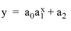
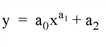
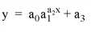
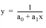
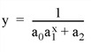
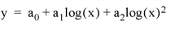

The COMFIT function fits the paired data { xi , yi } to one of six common types of approximating models using a gradient-expansion least-squares method.
This routine is written in the IDL language. Its source code can be found in the file comfit.pro in the lib subdirectory of the IDL distribution.
Result = COMFIT( X , Y , A [, / DOUBLE | , / EXPONENTIAL | , / GEOMETRIC | , / GOMPERTZ | , / HYPERBOLIC | , / ITMAX | , / LOGISTIC | , / LOGSQUARE | , TOL = value ] [, CHISQ = variable ] [, ITER = variable ] [, SIGMA = variable ] [, STATUS = variable ] [, WEIGHTS = vector ] [, YERROR = variable ] [, YFIT = variable ] )
Results in a vector containing the model parameters a 0 , a 1 , a 2 , etc.
An n-element vector containing the independent variable values. X may be of type integer, floating point, or double-precision floating-point.
An n -element integer, single-, or double-precision floating-point vector.
A vector of initial estimates for each model parameter. The length of this vector depends upon the type of model selected.
Note: One of the following keywords specifying a type of model must be set when using COMFIT. If you do not specify a model, IDL will display a warning message when COMFIT is called.
Set this keyword to a named variable that will contain the value of the reduced chi-square goodness-of-fit statistic.
Set this keyword to compute the parameters of the exponential model.

Set this keyword to force the computation to be done in double-precision arithmetic.
Set this keyword to compute the parameters of the geometric model.

Set this keyword to compute the parameters of the Gompertz model.

Set this keyword to compute the parameters of the hyperbolic model.

Set this keyword equal to a named variable that will contain the number of iterations performed.
Set this keyword to specify the maximum number of iterations. The default value is 20.
Set this keyword to compute the parameters of the logistic model.

Set this keyword to compute the parameters of the logsquare model.

Set this keyword to a named variable that will contain a vector of standard deviations for the computed model parameters.
Set this keyword to a named variable that will contain an integer indicating the status of the computation. Possible return values are:
|
0 |
The computation was successful. |
|
1 |
The computation failed. Chi-square was increasing without bounds. |
|
2 |
The computation failed to converge in ITMAX iterations. |
Set this keyword to specify the desired convergence tolerance. The routine returns when the relative decrease in chi-squared is less than TOL in one iteration. The default value is 1 x 10 -3 .
Set this keyword equal to a vector of weights for Y i . This vector should be the same length as X and Y . The error for each term is weighted by WEIGHTS i when computing the fit. Frequently, WEIGHTS i = 1.0/σ i 2 , where σ is the measurement error or standard deviation of Y i (Gaussian or instrumental weighting), or WEIGHTS = 1/Y (Poisson or statistical weighting). If WEIGHTS is not specified, WEIGHTS i is assumed to be 1.0.
Set this keyword to a named variable that will contain the standard error between YFIT and Y.
Set this keyword to a named variable that will contain an n -element vector of y-data corresponding to the computed model parameters.
; Define two n-element vectors of paired data:
X = [ 2.27, 15.01, 34.74, 36.01, 43.65, 50.02, 53.84, 58.30, $
62.12, 64.66, 71.66, 79.94, 85.67, 114.95]
Y = [ 5.16, 22.63, 34.36, 34.92, 37.98, 40.22, 41.46, 42.81, $
43.91, 44.62, 46.44, 48.43, 49.70, 55.31]
; Define a 3-element vector of initial estimates for the logsquare
; model:
A = [1.5, 1.5, 1.5]
; Compute the model parameters of the logsquare model, A[0], A[1],
; & A[2]:
result = COMFIT(X, Y, A, /LOGSQUARE)
The result should be the 3-element vector: [1.42494, 7.21900, 9.18794].
|
4.0 |
Introduced |
|
6.4 |
Added CHISQ, DOUBLE, ITER, ITMAX, STATUS, TOL, and YERROR keywords. |